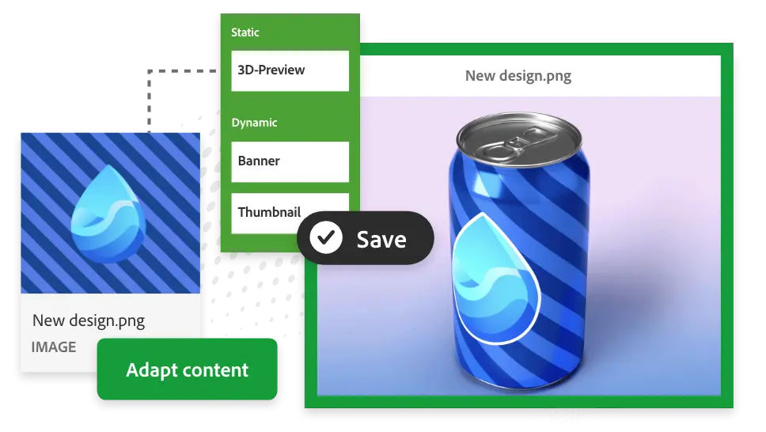

Adobe Experience Manager Assets is a cloud-native DAM built for today’s content needs, letting you easily manage millions of assets to create, manage, deliver, and optimize personalized experiences at scale.

Manage millions of assets from a single, cloud-based solution.
Reimagine digital asset management — built for today’s content demands and made to scale as your organization grows.
Boost performance with interactive and immersive assets
Empower collaboration among IT, creative, and marketing teams
Scale the DAM capabilities over time automatically
Track each asset and which team uses it to make real-time modifications